60 tons · Inner Sphere · 15 variants · 2511 to 3139

Here is a question worth asking before anything else. Why haven't you seen one of these on a table?
Not because it's bad. I'd put an Ostroc up against most heavies its age. It's been a good machine since 2511, older than the Warhammer, and one of the longest-serving designs anybody still fields. The real answer is duller and sadder than that, and I'll get to it.
Start with what it actually is. Sixty tons, walk five, run eight, which is quick for a heavy. It was built during the Age of War to fight in streets, and it's got a low, narrow profile the old readouts compare to an UrbanMech's. Stand one at the end of an alley and you'll genuinely struggle to pick it out, and that's on the official quirk list, not something I'm making up to sound clever.
What you've got. Two Fuersturm-C large lasers and two Fuersturm-b mediums, all four tucked into the side torsos, plus a Totschlagen four-rack in the right. Nine tons of armour and fifteen heat sinks. Almost the whole loadout is energy weapons, which means it can operate a long way from a supply line without bothering the quartermaster much, and that's why it made as good a raider as it did a street fighter.
And the thing I'd want to know before climbing into one. The arms are short and they're carrying almost no armour. You'll lose one, sooner rather than later, and the readouts say so plainly rather than pretending otherwise. Worse, those short arms make hand-to-hand fighting a bad idea, because the shock of a physical hit can knock the Fuersturm laser systems out of alignment. It doesn't want to be punched, and it's built to fight in the one place where punching happens constantly.
If you're choosing one: the OSR-2D is the classic done properly, the OSR-4L is the best of the lot by a decent margin, the OSR-4K is the sensible modern pick, and the OSR-6R is the strongest thing anybody's ever built on this frame.
The shape's the whole design. A low, narrow torso on a walker frame, weapons in pods rather than arms, and you'll recognise that layout because the Stalker and the Marauder both use it and both get far more credit for it. The Ostroc got there first, in 2511, and the only quirk the chassis carries is narrow and low profile.
That matters most exactly where it was built to fight. A sixty ton machine that's genuinely hard to pick out at the end of a street, moving at eighty-six kilometres an hour, isn't a pleasant thing to go looking for.
Every weapon lives in the side torsos. Two large lasers, two mediums, and the four-rack on the right. Nothing at all in the arms, which is the first thing you notice with the panels off, and it explains the second thing straight away: the arms carry almost no armour because there was never anything in them worth protecting. You'll lose one eventually. Plan for it rather than being surprised by it.
The energy-heavy loadout's the part I think gets underrated. One ton of missile reloads and the rest runs off the fusion plant, so an Ostroc can operate away from supply for a long stretch. That's why the old readouts keep calling it a raider as well as an urban fighter, and it's why you find it doing guerrilla work as often as street fighting.
If you picture an Ostroc, you're probably picturing flat paddle-like hands with missile ports built into them. I know I did, for years.
That's not the standard machine. The real Ostroc's got hands, proper ones, and its SRM 4 sits upright in the right torso.
The paddle art is the original art. It's what shipped with the very first Technical Readout: 3025, before anyone had written a line explaining it. The explanation came later, to account for the mismatch between that picture and the actual stat sheet: spares were hard to get during the Succession Wars, and Ostwar arm assemblies, which carry SRM 4 launchers instead of hands, ended up fitted to enough Ostrocs in the field that people assumed it was the standard look. I can't tell you whether that's the real reason the art looks the way it does, or a tidy fix for an old inconsistency. What I can tell you is the picture most people carry in their head isn't the factory machine.
Now the answer to the question I opened with.
Ostmann Industries built a genuinely good machine and couldn't build very many of them. Their production capacity was so small they had to hand their other Ost designs to Kong Interstellar on licence just to keep production of this one at a useful rate. Most of what they did manage was posted to garrison duty within the Terran Hegemony itself. It still fought in every major conflict of the Star League, right through the Amaris Civil War and into the First Succession War, but there just weren't very many of them anywhere.
Then in 2777 the Ostmann facility on Terra was destroyed, and nobody built a new Ostroc again. Everybody who had one kept fielding it, the Combine more than most.
Its reputation was set by what happened next, though calling it a reputation is generous. When the Helm Memory Core turned up and every old design in the Inner Sphere started getting modernised, the Ostroc mostly didn't. Sarna's specific about why: it was the small number of surviving machines and how widely they'd been scattered that made it not worth anyone's while to build a proper refit programme. No official refit kit was ever issued for it. What you got instead, per Sarna, was the OSR-2D turning up as a common upgrade in 3050 if a unit could get hold of the parts, which is their way of saying it depended entirely on what happened to be sitting in a particular supply depot.
So the scarcity fed itself. Too rare to justify a programme, which kept it rare. That loop's the real answer to the question at the top of this page, and it's a better one than most designs get.
It did come back, twice. The Capellan Strategios decided after the Clan Invasion that the old machine deserved modernising, and rather than reverse-engineer the original, they told every Capellan manufacturer to bid for a full replacement. Ceres Metals was the only company whose proposal matched exactly what had been asked for, and they took the contract, completing the first production run in January 3067. Versions then started turning up in the Taurian Concordat and the Circinus Federation, which the Capellans put down to espionage and were probably right about.
And in 3139, Kong Interstellar, the licensee that only ever built these because Ostmann couldn't keep up on their own, went back to the design with Clan Sea Fox help and built the best Ostroc there's ever been. Six hundred years after the original, from the company that started out as the subcontractor.
Every verdict below is against other Ostrocs available in the same era. This chassis rewards the comparison more than most, because the variants disagree sharply about what the machine is for.
Nothing in its era does the chassis's job better for the money.
Does the job competently. Another variant does it better or cheaper, but there is no reason to avoid this one.
Only earns its Battle Value if you specifically need what it carries. C3, stealth, a command console, flak, jump jets.
Another variant in the same era, at no more than 3 percent above its Battle Value, matches or beats it on every Alpha Strike damage band, on armour, on structure, and carries every special ability it has. Nothing gained, something lost, no dearer.
Only the Trap tier is calculated. It is worked out from the variant data rather than decided by me, which means it is falsifiable: to argue with it you only have to name something the cheaper machine gives up. The other three are my opinion and you should treat them that way. 1 of the 15 Ostroc variants fail the Trap test. The full rating scale is here, including what it deliberately does not measure.
All 15 are in the table further down. These are the ones that change how the machine plays.
60 tons · BV 1228 · PV 34 · Skirmisher · 2511
Walk 5 / Run 8 / Jump 0 · 15 Single · 300 Fusion Engine
2x Large Laser, 2x Medium Laser, 1x SRM 4
The original, 2511, and still the one you'll meet. Two Fuersturm-C large lasers and two Fuersturm-b mediums in the side torsos, a Totschlagen four-rack in the right. Nine tons of armour and eighty-six kilometres an hour on sixty tons. Nothing fancy and nothing wasted.
60 tons · BV 1478 · PV 36 · Skirmisher · 2729
Walk 5 / Run 8 / Jump 0 · 14 IS Double · 300 Fusion Engine
2x ER Large Laser, 2x Medium Laser, 2x Streak SRM 2
The SLDF Royal from 2729. ER large lasers, Streak twos instead of the four-rack, fourteen doubles and ferro-fibrous plate. Better than the standard in every direction and, like most Royals, almost impossible to actually field.
60 tons · BV 1396 · PV 39 · Skirmisher · 3050
Walk 5 / Run 8 / Jump 0 · 15 IS Double · 300 Fusion Engine
2x ER Large Laser, 2x Medium Laser, 1x SRM 4
The 3050 upgrade everybody actually wanted: ER large lasers and doubles, everything else left alone. There was never an official refit kit for the Ostroc. Sarna calls the 2D simply a common upgrade in 3050 if the parts could be obtained, which is their way of saying it happened piecemeal rather than to a schedule.
60 tons · BV 1288 · PV 30 · Skirmisher · 2876
Walk 5 / Run 8 / Jump 0 · 15 Single · 300 Fusion Engine
3x Large Laser
A third large laser in the right torso, paid for with both mediums and the four-rack. More reach on paper, and you've given up everything that made the machine work inside two hundred metres. Beaten outright by the OSR-2M, which costs 49 less BV and gives up nothing it carries.
60 tons · BV 1230 · PV 29 · Juggernaut · 2905
Walk 4 / Run 6 / Jump 3 · 19 Single · 240 Fusion Engine
2x SRM 2, 2x Large Laser, 2x Medium Laser
The Ostroc Mk II, and a frankenmech: Ostwar parts, an SRM 2 in each arm, four more heat sinks, three jump jets and half a ton more armour. The engine came down to a 240 to pay for it. Slower, tougher, and the only Juggernaut in the chassis.
60 tons · BV 1778 · PV 46 · Sniper · 3066
Walk 5 / Run 8 / Jump 5 · 13 IS Double · 300 Fusion Engine
2x ER Large Laser, 2x ER Medium Laser
The Capellan redesign of 3067, and the best Ostroc there is. Endo steel, five jump jets, ten and a half tons of stealth armour and a Guardian ECM to run it. Built for Shadow Lances, and it's genuinely difficult to hit.
60 tons · BV 1490 · PV 30 · Skirmisher · 3077
Walk 4 / Run 6 / Jump 6 · 11 IS Double · 240 Fusion Engine
2x Snub-Nose PPC, 2x ER Medium Laser
Kurita, 3077, and the sensible one. Twin snub-nose PPCs, ER mediums, six jump jets and a heavy-duty gyro so it stays upright when something connects. It went into factory production after the Jihad, which very few Ostrocs ever managed.
60 tons · BV 2095 · PV 41 · Skirmisher · 3139
Walk 6 / Run 9 / Jump 0 · 18 IS Double · 360 XL Engine(IS)
2x ER Large Laser, 2x ER Medium Laser, 1x Streak SRM 4
3139, and the ending nobody saw coming. Kong Interstellar, who only ever built Ostrocs under licence, survived the Succession Wars and went back to it with Clan Sea Fox help. Reflective armour, endo-composite, a 360 XL and Clan-spec lasers. The best damage in the chassis by a distance.
Piloting one. Fight where the profile actually helps you. Out in open ground you're just a sixty ton machine with nine tons of armour and no reach advantage worth mentioning, which is a fight you didn't need to pick. In a built-up area you're hard to spot, quick on your feet, and carrying four lasers. Keep something between you and the enemy and keep moving. Make your peace early with losing an arm, because you will, and there's no point spending effort trying to protect them.
Fighting one. Drag it out into open ground, or close the distance and start punching. Both work well. It's got nothing worth calling a long-range game, so at distance you're only ever dealing with two large lasers. Get in close and its arms are short, thinly armoured and physically fragile, and a solid physical attack can knock its main guns out of alignment. 7 of the 15 variants carry jump jets, so don't assume the terrain will pin it down for you.
What I see go wrong. People field it as a general purpose heavy because sixty tons sounds like one. It isn't that. It's a specialist that happens to weigh sixty tons, and on an open map it'll get outranged and outgunned by things that cost about the same.
If you run solo games with our AI opponent, the Ostroc is the most single-minded chassis on the site. 13 of the 15 variants are tagged Skirmisher.
A useful opponent when you want a scenario about position rather than a firing line, and a good one to put on a city map.
Damage figures are the Alpha Strike short, medium and long values. BV is Battle Value 2.0.
| Variant | Intro | BV | PV | Role | Weapons | S/M/L | Verdict |
|---|---|---|---|---|---|---|---|
| Age of War | |||||||
| OSR-2C | 2511 | 1228 | 34 | Skirmisher | 2x Large Laser, 2x Medium Laser, 1x SRM 4 | 3/3/0 | Worth it |
| Star League | |||||||
| OSR-2Cb | 2729 | 1478 | 36 | Skirmisher | 2x ER Large Laser, 2x Medium Laser, 2x Streak SRM 2 | 3/3/2 | Worth it |
| Early Succession War | |||||||
| OSR-2M | 2793 | 1239 | 29 | Skirmisher | 2x Large Laser | 2/2/0 | Worth it |
| OSR-3C | 2876 | 1288 | 30 | Skirmisher | 3x Large Laser | 2/2/0 | Trapbeaten by OSR-2M |
| OSR-2L | 2884 | 1233 | 31 | Skirmisher | 2x Large Laser, 2x Medium Laser, 1x LRM 5 | 2/2/0 | Situational |
| Late Succession War - LosTech | |||||||
| OSR-9C | 2905 | 1230 | 29 | Juggernaut | 2x SRM 2, 2x Large Laser, 2x Medium Laser | 3/3/0 | Solid |
| Late Succession War - Renaissance | |||||||
| OSR-2C (Michi) | 3028 | 1321 | 29 | Skirmisher | 2x Large Laser, 2x Medium Laser, 1x SRM 6 | 2/2/0 | Solid |
| Clan Invasion | |||||||
| OSR-2D | 3050 | 1396 | 39 | Skirmisher | 2x ER Large Laser, 2x Medium Laser, 1x SRM 4 | 4/4/2 | Worth it |
| Civil War | |||||||
| OSR-4C | 3066 | 1325 | 33 | Skirmisher | 2x Large Laser, 2x Medium Laser, 2x Rocket Launcher 15, 2x Rocket Launcher 10 | 3/3/0 | Solid |
| OSR-4L | 3066 | 1778 | 46 | Sniper | 2x ER Large Laser, 2x ER Medium Laser | 2/2/2 | Worth it |
| Jihad | |||||||
| OSR-5W | 3070 | 1655 | 37 | Skirmisher | 2x Snub-Nose PPC, 2x ER Medium Laser | 3/2/0 | Solid |
| OSR-4K | 3077 | 1490 | 30 | Skirmisher | 2x Snub-Nose PPC, 2x ER Medium Laser | 3/2/0 | Worth it |
| Early Republic | |||||||
| OSR-5C | 3082 | 1788 | 37 | Skirmisher | 1x Light PPC, 1x Medium Pulse Laser, 1x Heavy PPC, 1x ER Medium Laser | 3/3/2 | Solid |
| OSR-3M | 3088 | 1594 | 36 | Skirmisher | 2x ER Large Laser, 2x ER Medium Laser, 1x Streak SRM 4 | 3/3/2 | Solid |
| Dark Age | |||||||
| OSR-6R | 3139 | 2095 | 41 | Skirmisher | 2x ER Large Laser, 2x ER Medium Laser, 1x Streak SRM 4 | 5/5/2 | Worth it |
Availability for the OSR-2C by era, straight off the Master Unit List.
| Era | Available to |
|---|---|
| Star League (2571 - 2780) | Capellan Confederation, Draconis Combine, Lyran Commonwealth, Mercenary, Star League General |
| Early Succession War (2781 - 2900) | Inner Sphere General, Mercenary, Periphery General, Star League in Exile |
| Late Succession War - LosTech (2901 - 3019) | ComStar, Inner Sphere General, Kell Hounds, Mercenary, Periphery General, Wolf's Dragoons |
| Late Succession War - Renaissance (3020 - 3049) | ComStar, Inner Sphere General, Kell Hounds, Mercenary, Periphery General, Wolf's Dragoons |
| Clan Invasion (3050 - 3061) | Inner Sphere General, Kell Hounds, Mercenary, Periphery General, Wolf's Dragoons |
| Civil War (3062 - 3067) | Inner Sphere General, Kell Hounds, Mercenary, Periphery General, Wolf's Dragoons |
| Jihad (3068 - 3080) | Inner Sphere General, Kell Hounds, Mercenary, Periphery General, Wolf's Dragoons |
| Early Republic (3081 - 3100) | Mercenary, Periphery General |
| Late Republic (3101 - 3130) | Periphery General |
65 tons · Inner Sphere · 3 variants · BV 1205 to 1638
The design the Ostroc was built to replace, and the source of those paddle arms. Components were interchangeable enough that Ostrocs wore Ostwar parts for centuries.
60 tons · Mixed · 15 variants · BV 1245 to 2277
Arrived near the end of Ostroc production and carried no ammunition at all, which made it the better deep raider of the two.
35 tons · Inner Sphere · 9 variants · BV 484 to 1209
The scout of the family, licensed to Kong Interstellar in 2700 so Ostmann could keep the Ostroc line going.
75 tons · Inner Sphere · 36 variants · BV 1335 to 2708
No relation, but it uses the walker and pod profile the Ostroc had first, and it is far better known for it.
30 tons · Inner Sphere · 11 variants · BV 470 to 894
The other machine built for streets, and the comparison the old readouts reach for when describing how hard an Ostroc is to spot.
Ostmann Industries had small production capacity and licensed their other designs out purely to sustain output on this one. Their Terra facility was destroyed in 2777, ending new production. Then, crucially, when the Helm Memory Core let the Inner Sphere modernise its old designs, the Ostroc got passed over precisely because so few survived, spread so thinly, that no refit programme made sense.
The OSR-4L, the Capellan redesign of 3067, with stealth armour, ECM and five jump jets. For the Succession Wars the OSR-2D is the classic upgraded properly. The OSR-4K is the sensible late pick, and the OSR-6R at BV 2095 is the strongest machine ever built on the frame.
It doesn't, normally. The standard Ostroc's got hands and mounts its SRM 4 in the right torso. The paddle-like launchers in the original Technical Readout: 3025 art are arm assemblies from the Ostwar, an earlier Ostmann design with interchangeable parts. Sarna's own account is that this look got explained afterwards as a field refit fitted when spares ran short, common enough that people assumed it was the original design.
In the right place, yes. It's fast for a heavy, hard to spot in an urban environment, and almost entirely energy-armed so it can operate away from supply. In open ground it's outranged and its arms are fragile. It's a specialist, not a general purpose heavy.
All three are Ostmann designs sharing many components. The Ostwar came first and the Ostroc was built to replace it. The Ostsol arrived near the end of Ostroc production and carried no ammunition at all, which made it the better deep raider of the two.
Stats on this page are generated directly from our variant database, which is reconciled against the Master Unit List for Battle Value, introduction dates and per-era faction availability. Alpha Strike damage values are the standard card figures. If you spot something wrong, tell me and I will fix it.